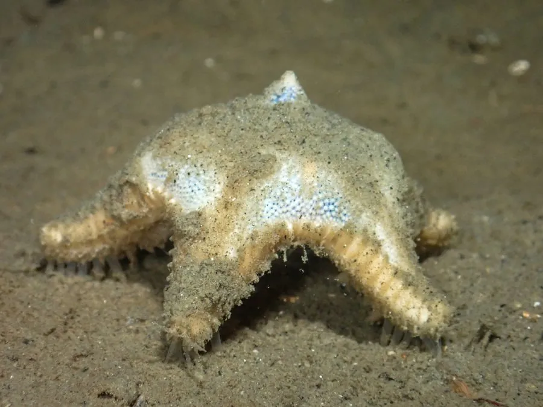

其他无脊椎动物 · 动物界
锯腕海星 Ctenodiscus crispatus

体盘厚、腕短而边缘带锯齿状棘的深海海星，栖于软泥海底，吞食沉积物中的有机质，分布北半球冷水海域。
- 分类
- 门棘皮动物门纲海星纲目桩海星目科锯腕海星科属锯腕海星属
- 栖息环境
- 北半球冷水海域的软泥海底，水深数十至数百米
- 地理分布
- 北极、北大西洋至北太平洋的冷水海域
- 保护级别
- 常见种，无保护级别；底拖网破坏栖息地
物种志
锯腕海星的体盘厚而隆起，五腕短粗，呈五角星状，腕缘有一列锯齿状的边缘棘，锯腕之名由此而来。体表呈橙黄至灰黄色，覆有细小颗粒和棘刺，管足细小而不带吸盘，适合在软泥上活动。它是典型的小型海星，腕长约三至五厘米，整体像一枚厚实的五角星饼。
它分布于北半球冷水海域，从北极、北大西洋到北太平洋的软泥海底，水深数十米至数百米。它以沉积食性为主，把含有机质的泥沙吞入胃中消化，是深海软泥底质的重要清道夫。它雌雄异体，繁殖期释放配子，幼虫浮游后沉降。底拖网作业会破坏其栖息环境并造成大量误捕，是深海生态系统受人类活动影响的例证之一。
形态与习性
- 体径腕长约三至五厘米，体盘厚
- 腕缘一列锯齿状边缘棘
- 管足细小无吸盘，适于软泥活动
- 食性吞食含有机质的泥沙，沉积食性
- 分布北极至北大西洋、北太平洋冷水海域
- 威胁底拖网破坏栖息地并造成误捕
趣味知识
- 它的腕边缘长着一圈小锯齿，像一把五角形的锯。
- 它不吃整块的猎物，而是把泥吞进去慢慢消化里面的有机质。
- 拖网从深海软泥上拉过，常会顺带捕上一堆这样的海星。